OCR Invoice Capture
Turning vendor PDF invoices into posting-ready purchase documents in Microsoft Dynamics 365 Business Central
Solution Document · Microsoft Dynamics 365 Business Central 28.x · Extension version 1.5 · Prepared by Shrey Chauhan · September 2026
Every finance team running Business Central has the same bottleneck, and it looks the same in every office: somebody has a vendor's PDF open on one screen and a blank purchase invoice on the other, and they type. Vendor, invoice number, date, ten lines, HSN codes, the CGST/SGST split, a TDS section. Then they close it and start the next one.
This document describes an extension that removes that step. A user drops a PDF — or an entire folder of PDFs — onto a Business Central page. Each file is read by Google Gemini or Azure AI Document Intelligence, mapped against the company's own master data, presented for review on a purchase-invoice-shaped form, and turned into a Purchase Invoice or Purchase Order with dimensions, GST and TDS applied and the original PDF attached.
Contents
1 | What the module does |
2 | Choosing an OCR engine |
3 | Configuration |
4 | The capture workflow, end to end |
5 | Why analysis and creation are separate transactions |
6 | How invoice lines are matched to master data |
7 | India GST and TDS |
8 | Engineering notes |
9 | Current limitations |
1. What the module does
The user works from a single page. Files are dropped onto it or selected from a folder; a FactBox on the right keeps a live count of what has been analysed, created, flagged for review and failed.
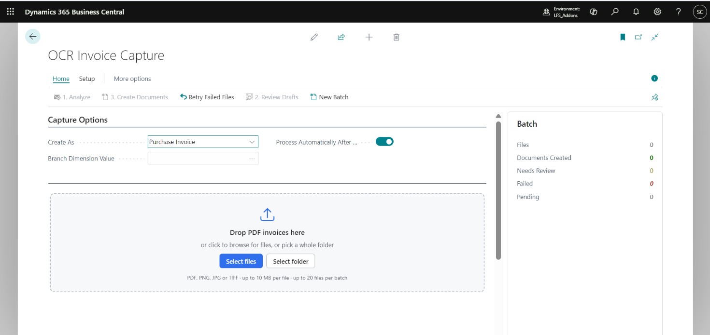
Figure 1 — The OCR Invoice Capture page. Three numbered actions run in sequence, each enabled only when it applies. The Batch FactBox keeps a running count of outcomes.
The three actions are deliberately ordered and deliberately separate:
# | Action | What it does | Cost to repeat |
1 | Analyze | Reads every uploaded file into an editable draft. Creates no documents. | One API call |
2 | Review Drafts | Opens each draft on a purchase-invoice-shaped form for correction. | Free |
3 | Create Documents | Turns reviewed drafts into purchase invoices or orders, with the source PDF attached. | Free |
Supporting actions handle the exceptions: Retry Failed Files re-runs only the rows that failed, and New Batch starts a fresh upload session without disturbing the history of earlier ones.
2. Choosing an OCR engine
Two engines ship, both behind a single AL interface and switchable with one field on the setup page.
Google Gemini (default) | Azure AI Document Intelligence | |
Cost | Free tier, no credit card | Approx. 1 cent per page, card required |
Call pattern | One synchronous POST | 202 accepted, then poll for the result |
Extraction rules | A prompt you edit at runtime | Fixed, trained by Microsoft |
Confidence | Field-coverage score | True per-field confidence |
India GST | CGST/SGST/IGST split, HSN, GSTIN, purchase-order role detection | Generic vendor tax ID only |
The editable prompt is the real differentiator. A trained model returns the fields its vendor chose for you; with a prompt you can add a rule such as “on a Purchase Order the company on the letterhead is the BUYER, not the vendor” — and that single sentence prevents an entire class of wrong-vendor bookings that no fixed model can be taught.
Worth knowing before you rely on it
Gemini's confidence score is a completeness measure, not an accuracy one. It counts how many core fields were found, so a confident extraction of the wrong field still scores high. Azure's per-field confidence reflects how sure the model is that it read the characters correctly. Those are different guarantees.
3. Configuration
3.1 OCR Capture Setup
One setup card holds the service credentials, the timing behaviour and the extraction prompt. The API key is written to Isolated Storage rather than to the table, so it is encrypted at rest and never appears in a record export.
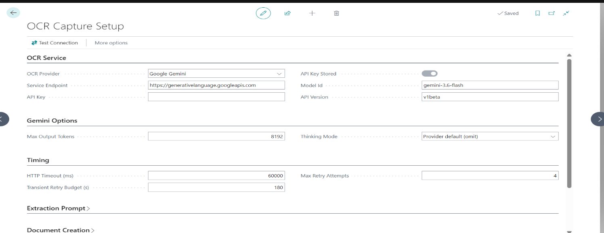
Figure 2 — OCR Capture Setup configured for Google Gemini. The Timing group carries the HTTP timeout, the maximum retry attempts and the transient retry budget in seconds — see section 8.
Recognition accuracy is then improved by curating three mapping tables, not by changing code. Each table carries a Priority and a Hit Count, so the rules that are actually earning their place are visible at a glance.
3.2 Vendor mapping
“When the paper says this, it is that vendor.” Rules can match on the printed name or the tax registration number, and each rule can also carry a branch dimension override, so a vendor billed through two branches resolves correctly without the reviewer intervening.
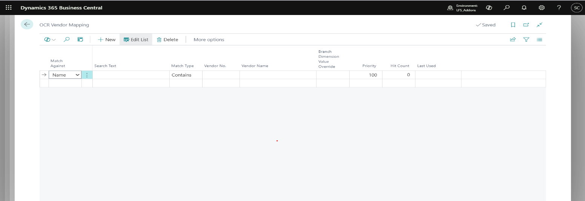
Figure 3 — OCR Vendor Mapping. Match Against, Search Text and Match Type define the rule; Branch Dimension Value Override applies a dimension at the same time.
3.3 Item and account mapping
The same idea at line level, and in practice the table that does the most work. A rule can point at any purchase line type — item, G/L account, resource, fixed asset or item charge — and it is checked after the standard Item Reference table, so vendor product codes should be maintained there and this table kept for description-based rules.
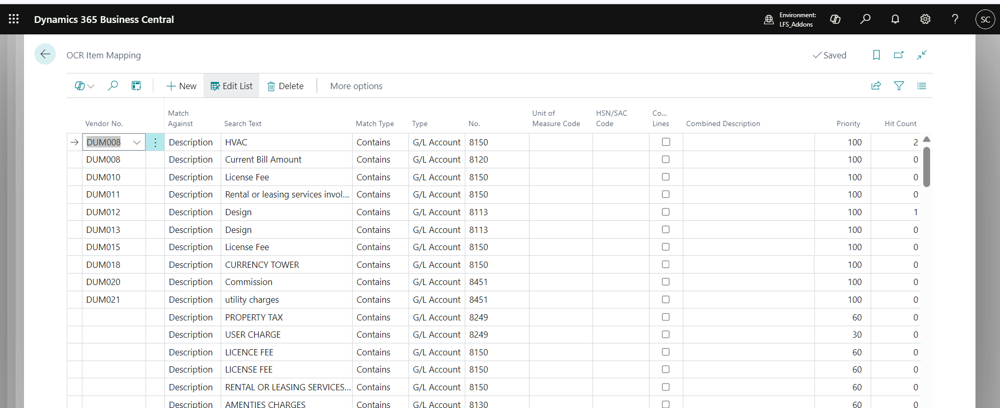
Figure 4 — OCR Item Mapping in production use. Rules resolve printed descriptions such as HVAC, Current Bill Amount, License Fee and Property Tax onto the correct G/L accounts, per vendor where needed. Hit Count shows which rules are firing.
Two columns on this table deserve attention. Combine Lines folds several printed rows that resolve to the same account into a single purchase line — the standard case being a courier invoice that prints freight, fuel surcharge and handling separately when all three post to one expense account. Combined Description overrides the joined-up wording with something shorter.
3.4 Tax mapping
Printed tax rate to posting groups. The Rate Tolerance column exists because OCR reads 17.98 where the paper says 18, and a rule that only matches an exact decimal would fail on perfectly good documents.
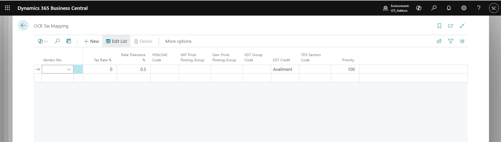
Figure 5 — OCR Tax Mapping. Beyond the W1 posting groups, each row carries HSN/SAC, GST Group Code, GST Credit and a TDS Section Code for the case where the service — rather than the vendor — determines the section.
4. The capture workflow, end to end
The walkthrough below follows one real batch of eight vendor invoices from upload to a posted document.
4.1 Upload
Files can be dragged onto the drop zone, selected individually, or picked as a whole folder — the control walks the directory tree and takes everything in it.
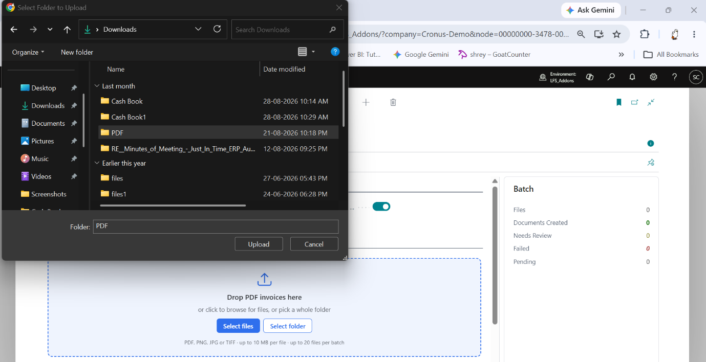
Figure 6 — Selecting an entire folder of invoices. The browser returns every file in the tree; the client then uploads them one at a time.
4.2 Analysis
Each file is chunked, transferred, reassembled and verified before it is sent anywhere. Progress is reported per file rather than as a single indeterminate spinner, so a long batch is legible while it runs.
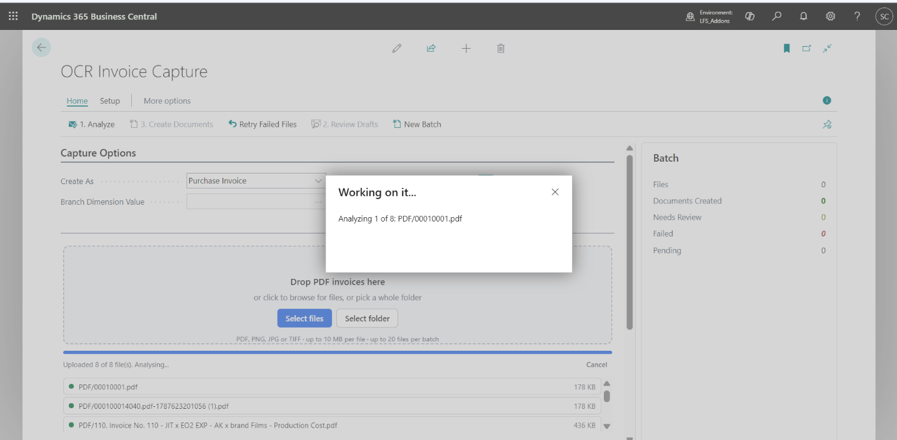
Figure 7 — Eight files uploaded and analysis under way. Each file is named as it is processed, and the uploaded list shows the transferred size so a truncated transfer is visible immediately.
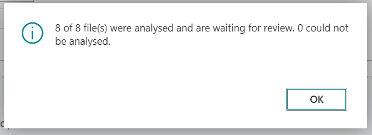
Figure 8 — The batch reports once, with counts rather than a generic success message. Files that could not be analysed are counted separately and keep their reason on the staging record.
At this point no purchase documents exist. Every file has become an editable draft, and the extracted header values are already visible in the batch list.
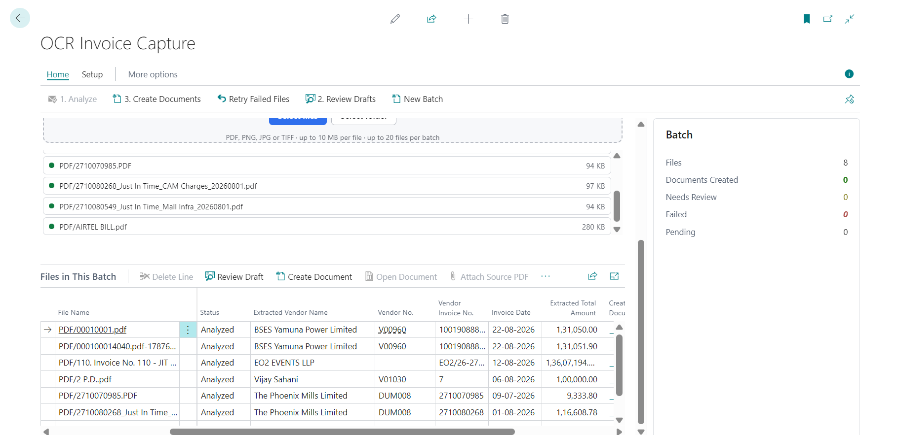
Figure 9 — Files in This Batch after analysis. Vendor name as printed, the resolved Vendor No., the vendor's invoice number, the invoice date and the printed total are all available before any document is created.
4.3 Review
The review page is shaped like a purchase document on purpose. AP clerks already know how to read a purchase invoice, and every minute spent teaching them a new screen is a minute the module costs rather than saves.
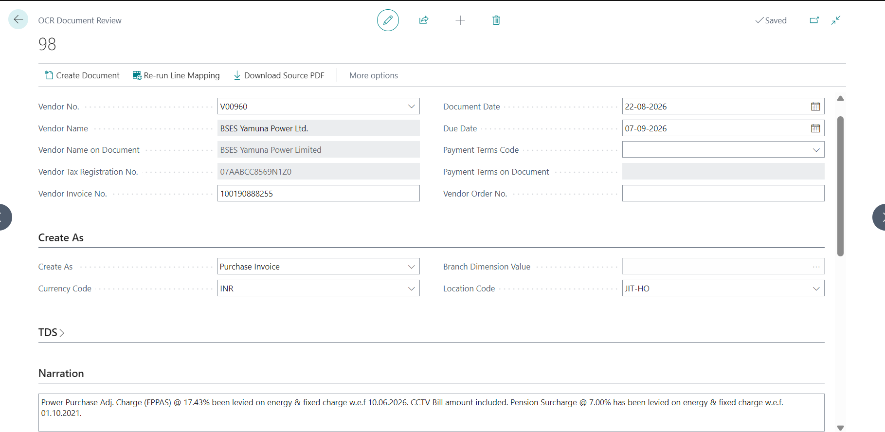
Figure 10 — The draft header. Note Vendor Name on Document and Vendor Tax Registration No. held alongside the resolved vendor, so the reviewer can see what the paper said and what it was matched to. The Narration field at the bottom is scanned from the header and footer of the PDF — here the FPPAS adjustment and pension surcharge notes printed on an electricity bill — and is written to the Purchase Comment Lines of the created document.
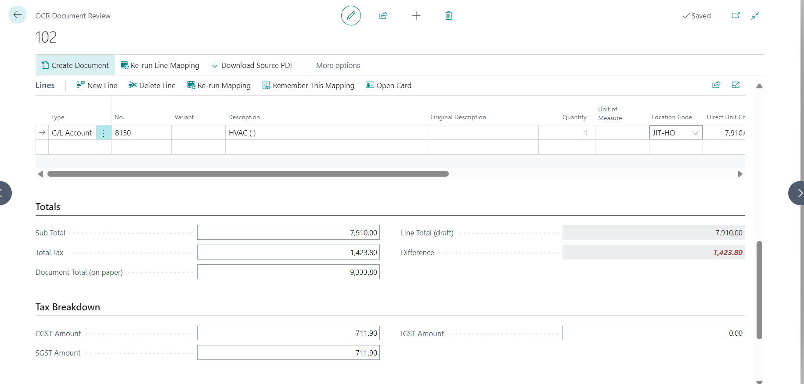
Figure 11 — Lines, totals and the tax breakdown. The printed document total is held against the draft line total, and the CGST/SGST/IGST split is read from the invoice rather than inferred.
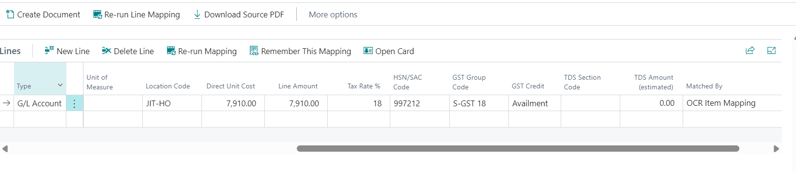
Figure 12 — The same line scrolled right. HSN/SAC, GST Group Code, GST Credit, TDS Section Code and estimated TDS are all editable before the document exists. The Matched By column records why the line resolved as it did — here, an OCR Item Mapping rule.
Two safeguards inside the review step. Re-running the line mapping only touches lines whose number is blank, so a line a reviewer set by hand is never silently overwritten. And Remember This Mapping turns a one-off manual correction into a permanent rule, so the same invoice layout does not need correcting twice.
4.4 Document creation
Creating the document validates through the standard purchase document API, so everything a manually keyed invoice would receive — vendor defaults, dimension sets, posting groups, GST and TDS — is applied the same way.
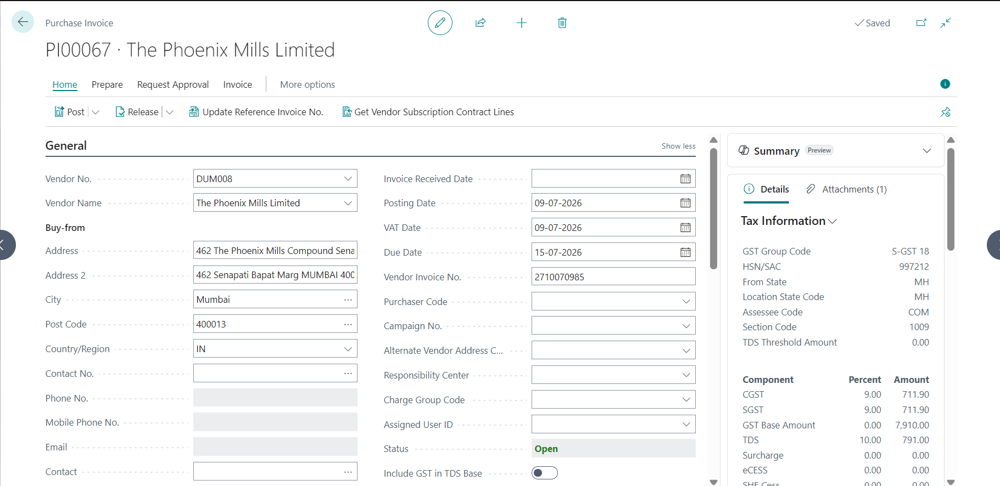
Figure 13 — The created Purchase Invoice. The Tax Information FactBox shows GST Group Code, HSN/SAC, state codes, assessee code, TDS section and the calculated CGST, SGST and TDS components — all resolved during capture.
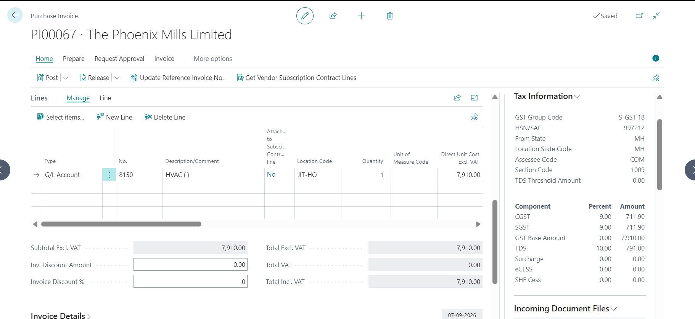
Figure 14 — The invoice lines. The description, G/L account, location code, quantity and unit cost carried straight through from the reviewed draft.
The original PDF travels with the document. It is written to the standard Document Attachment table rather than a private one, which means Business Central carries it through to the posted invoice without any further work.
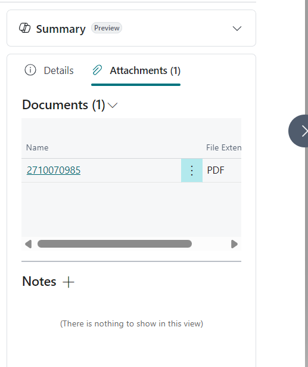
Figure 15 — The source PDF in the Attachments FactBox, named for the vendor's own invoice number. The invoice as the vendor sent it stays one click from the lines it produced — for the approver, for the auditor, and for whoever has to work out in six months why a line reads the way it does.
4.5 Posting
From here the document is an ordinary Business Central purchase invoice and posts through the standard routine.
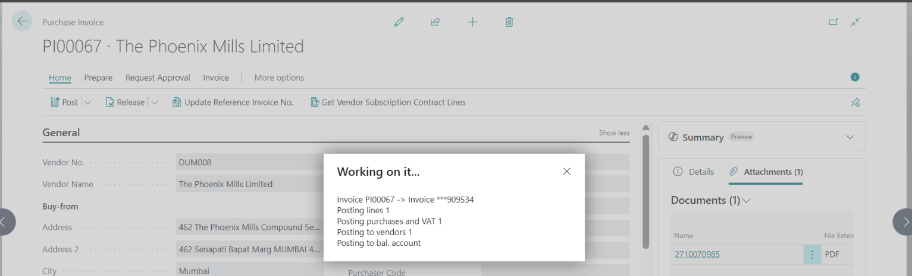
Figure 16 — Posting the captured invoice. Nothing in the posting path is custom.
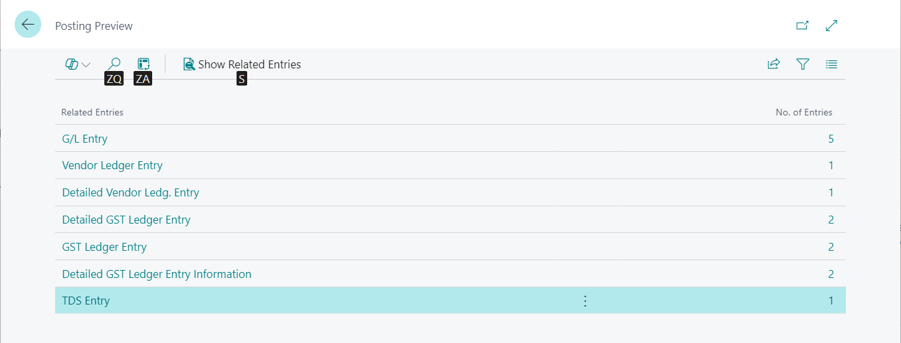
Figure 17 — Posting preview. G/L entries, the vendor ledger entry, detailed and summary GST ledger entries and the TDS entry are all produced correctly — which is the real test of whether the captured tax data was right.
Finally, the batch list records which document each file produced, so the audit trail from PDF to posted invoice is complete in both directions.
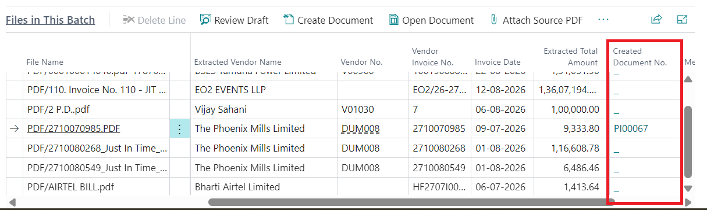
Figure 18 — The Created Document No. column ties each source file to the purchase document it became.
5. Why analysis and creation are separate transactions
The obvious design is a single button: read the file, make the document. It is the wrong design, for a reason that only appears in production.
Analysis and creation fail for different reasons and cost different amounts to repeat. Analysis fails on service capacity or scan quality, and retrying spends an API call — which, on a metered free tier, comes out of a daily allowance that cannot be topped up. Creation fails on mapping and master data: an unknown vendor, a blocked item, a dimension value someone deactivated last month. Retrying costs nothing.
Collapsing the two means every master-data problem forces the OCR to be paid for again. Because the draft commits first, in its own transaction, a file that has been analysed never has to be read again. Fix the vendor, fix the item, press Create as many times as necessary.
A second benefit was not designed for and is now considered essential. When a session times out halfway through a folder of forty invoices, the drafts remain — already analysed and already paid for. A separate OCR Document Review List opens directly onto the drafts that have not yet produced a document, so work can resume days later at no cost.
One draft, one document. Document creation refuses outright if the draft already records a document that still exists. The check sits at the single point every route passes through rather than on the screens, because a stale list row, a double click, a batch re-run or two people working the same draft would each otherwise book the invoice twice.
6. How invoice lines are matched to master data
The model reads the line text. Turning that text into a posting decision happens entirely in AL, against the company's own master data, in a fixed ladder that stops at the first unambiguous hit.
# | Looked up in | Matched on |
1 | Item Reference | the vendor's printed product code |
2 | OCR Item Mapping | description text — can point at any line type |
3 | Item · Vendor Item No. | the printed product code |
4 | Item · No. | the printed code, read as an item number |
5 | Item · No. | a code-shaped token found inside the description |
6 | Item | Search Description, then Description — unblocked only |
7 | G/L Account | Name — posting, direct-posting, unblocked only |
8 | Fixed Asset | Search Description, then Description — active only |
9 | Fallback G/L account from setup | nothing matched; the file is flagged for review |
Steps 6, 7 and 8 accept an unambiguous match only. Where two masters share a description, the paper genuinely does not say which is meant, so the match falls through rather than guessing.
Fixed Asset sits after G/L Account deliberately. Both require an exact hit, so a clash means the two masters carry identical wording, and the tie has to break toward the cheaper mistake: a capital cost landing on an expense account is one field to correct on the review page, whereas an expense landing on a fixed asset creates an acquisition entry and starts depreciating something that does not exist.
The honest expectation to set
The engine reads “HP Laptop 15z” reliably. Deciding that it is item ITEM-1004 is data you supply. Expect to seed the mapping tables from your highest-volume vendors before accuracy feels good — and expect the correction log to tell you which rules to add next.
7. India GST and TDS
Everything India-specific is reached through a localization bridge that publishes seven events, with a single subscriber codeunit that is the only file in the extension naming an India field. The practical effect on a captured document:
- GST Group Code and HSN/SAC are resolved from the item, G/L account or item charge, and can be overridden on the review line before the document exists.
- GST Credit (Availment / Non-Availment) is resolved weakest-first: from the master record, then from the matched tax mapping rule, then from whatever the reviewer sets — which is the last word, because they are looking at the paper.
- TDS Section Code can come from the vendor's Allowed Sections, from the tax mapping rule when the service rather than the vendor determines the section, or from the reviewer. A courier billing freight under 194C and professional fees under 194J is one vendor and two sections, which no vendor-level default can express.
- GST Vendor Type and the vendor's GST registration number are set on the header before any line exists, which is required for the tax engine to calculate at all.
Two ordering rules that are easy to get wrong. GST Group Code must be validated before HSN/SAC, because validating the group clears the HSN as a side effect. And GST Vendor Type must be set before the first line is inserted — a line added against a header with a blank vendor type calculates no GST, and setting the type afterwards does not go back and recalculate. The document then totals correctly against a subtotal carrying no tax, which is the hardest kind of error to notice.
One estimate is deliberately absent. Total TDS Amount on the review page would require resolving a rate out of the Tax Engine's use-case matrix, which depends on how assessee codes, concessional codes, thresholds, surcharge and effective dates are configured in that company. An approximation would routinely disagree with what actually posts, which is worse than showing nothing — so the field is hidden rather than displaying a zero that reads as “no TDS on this document”. The section code still flows to the purchase line, which is the part that has to be right, and Figure 17 shows the resulting TDS entry.
8. Engineering notes
8.1 Living inside a rate limit
The free Gemini tier is metered on requests, not tokens — commonly five per minute and twenty per day. A forty-invoice folder does not fit inside that, and no amount of retrying creates quota.
An early implementation treated HTTP 429 the same as 503: both transient, both clearing on their own, both in the retry list. That is wrong in a way that amplifies. A 503 is the provider's capacity problem and repeating it costs only time; a 429 is your allowance, and every retry spends another request from the pot that just ran out. With 429 in the transient list, a throttled file retried for the full 180-second budget on roughly 15-second backoffs — fifteen to twenty requests for a single invoice. Against a twenty-a-day allowance, one document could burn the entire day and manufacture most of its own rejections.
Three changes followed, all of which are now considered mandatory for anything calling a metered AI endpoint:
Change | Behaviour |
Pace proactively | A Requests per Minute setting spaces calls so the limit is never reached. Zero disables pacing, which is correct on a paid key. |
Retry 429 differently | At most two further attempts, each waiting the full period the service asked for, read from Retry-After or from the retry delay in the error body. |
Stop, don't grind | The first rate-limit failure ends the run and reports once. Untouched files stay pending, so nothing is paid for twice on resume. |
Retries carry exponential backoff with jitter. The jitter matters at batch scale: without it, every throttled file in a fifty-file folder retries at the same offset and hits the service in lockstep.
8.2 Reassembly is verified, not assumed
Uploading a folder of PDFs through a control add-in means chunking each file into Base64 fragments. The intuitive implementation opens the blob's output stream once and decodes each fragment into it, expecting them to concatenate. They do not — each decode writes from position zero, so the second fragment overwrites the first and the file ends up exactly one fragment long. The failure is silent at upload time and surfaces much later as an unhelpful HTTP 400 from the OCR service.
Each fragment is therefore decoded independently and appended with CopyStream, and the result is checked: the assembled byte count must match the size the browser reported, and a PDF must begin with %PDF-. A truncated or mis-ordered transfer is rejected where it happens rather than sent onward corrupted.
8.3 Failure isolation
Each file is processed inside its own transaction, so one unknown vendor or one blocked dimension value rolls back that file alone and the rest of the batch continues. The reason lands on the staging record and is visible in the file list. Three statuses carry the outcome:
Status | Meaning |
Document Created | Clean — safe to post. |
Needs Review | A document exists but something is off: low confidence, a total mismatch beyond tolerance, unmapped lines sitting on the fallback account, or a duplicate vendor invoice number. |
Failed | No document. Fix the mapping or master data and use Retry Failed Files. |
8.4 Measuring whether accuracy is improving
Every field a human changes on the review page is logged: which field, the old value, the new value, the vendor, and the matching rule that produced the answer they rejected. That last column is the useful one — a rule that keeps being overridden is a wrong rule, and it now says so in a list that can be sorted and counted. It converts “the OCR is a bit hit and miss” into a specific, fixable set of rows.
9. Current limitations
- HTTP in AL is synchronous, so a large batch occupies the UI session for as long as the service takes. For sustained volume, run the batch from a Job Queue entry rather than from the page.
- AL cannot split a PDF. Where one file holds several invoices, each resulting document receives the whole file as its attachment, with a page range recorded to say where to look.
- Estimated TDS is not shown, for the reasons given in section 7. The section code still posts.
- Recursive folder selection requires a modern browser host. Drag-and-drop and individual file selection work everywhere.
- Mapping is the real work. Extraction quality is high out of the box; posting accuracy depends on master data that has to be curated.
Summary
A model that reads invoices is a commodity. The work that makes such a module trustworthy sits around it: the transaction boundaries that stop a master-data error costing an API call, the matching ladder that resolves text to a posting decision, a review step shaped like the document it produces, retry semantics that respect a metered allowance, and failure reporting that says exactly which file went wrong and why.
Across the batch shown in this document, eight vendor invoices in four different layouts — an electricity bill, a mall infrastructure charge, an events invoice and a telecom bill — were read, mapped, reviewed and turned into purchase documents carrying correct GST and TDS, with each source PDF attached and posting previews confirming the ledger impact.